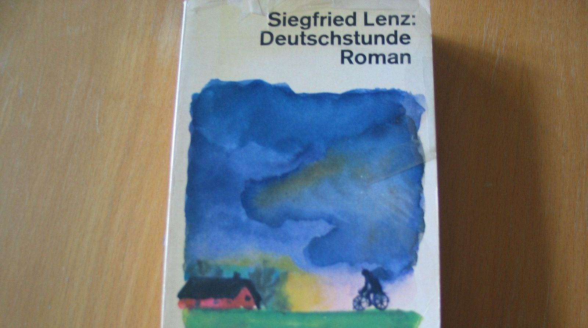

Forord
Et besøg på Nolde-museet i Seebüll fascinerer og bringer minder frem om romanen Deutschstunde af Siegfried Lenz; en roman, der har spillet en helt central rolle i fortællingen om Nolde.

Et besøg på Nolde-museet i Seebüll fascinerer og bringer minder frem om romanen Deutschstunde af Siegfried Lenz; en roman, der har spillet en helt central rolle i fortællingen om Nolde.